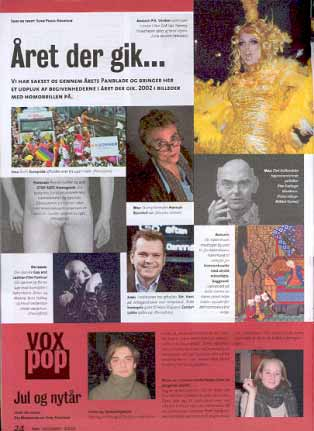

| Desember 2002 |

Frk. Verden ruller over scenen i Den Grå Hal. Tammy Holestream løber af med sejren.
(Ulla Munch-Petersen)
Oktober:
Den danske Gay and Lesbian Film Festival slår dørrene op for en uge med homofilm i København, Århus og Malmø. Bent Stålhøj og Knud Vesterskov vinder særprisen.
(Pressefoto)
Print denne side